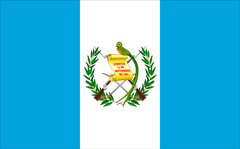

About Me
My name is René. I was born in Guatemala and currently live there, but have lived in and traveled to many other places. I work as a Deal Analyst or Commercial Architect, which is the fancy way of saying I'm in charge of telling potential customers how much their new contracts will cost. I like computer programming, reading and spending time with my family.
Guatemala City, Guatemala
Guatemala is the most populated country in Central America, located south of Mexico and also bordering the Caribean Sea, Pacific Ocean, Honduras and El Salvador. Guatemala City, where it currently is, was founded in 1776, is at 1,500 meters above sea level and houses more than 5 million people. It's also a busy city full of all types of commerce, services and industries.